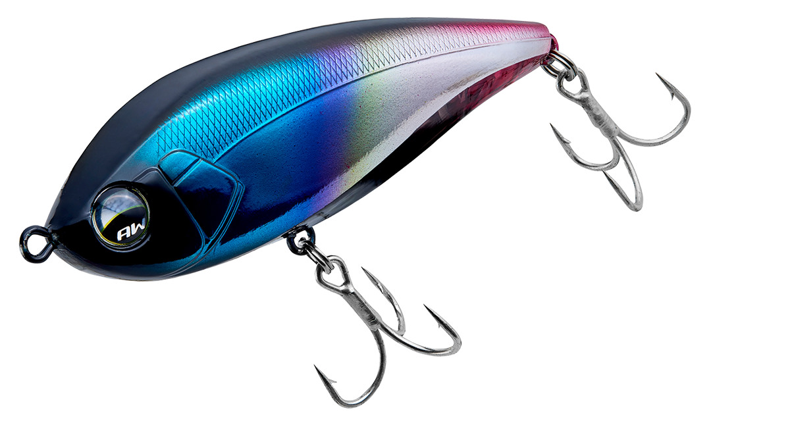
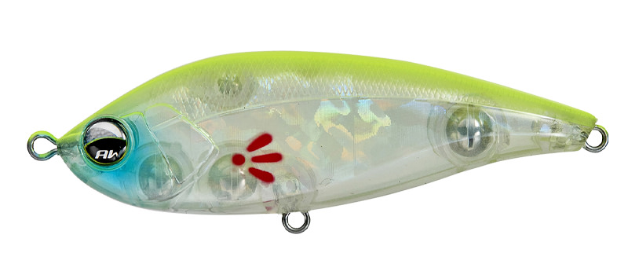
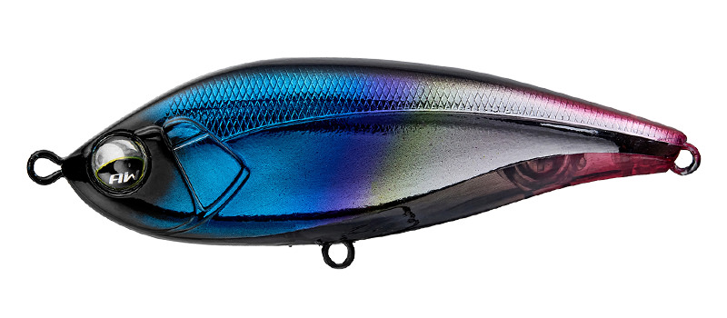
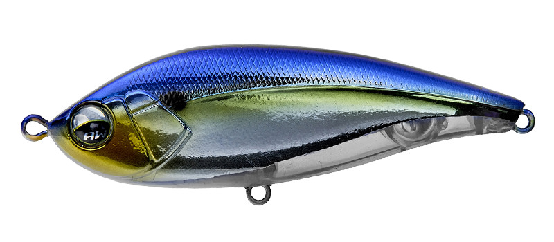
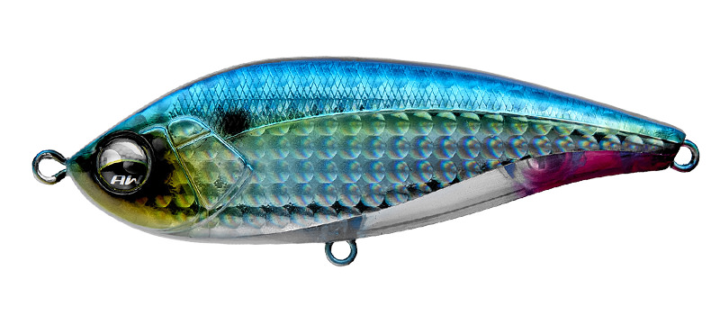
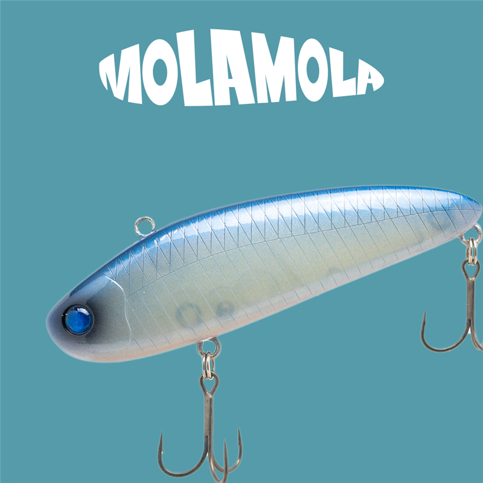

クー・シー80F
（Cu-Sith80F）
クー・シー80F（Cu-Sith80F）はAqua Wave（アクアウェーブ／コーモラン）のフローティングスイムベイトです。
流れの強さに応じてアクションが変化するフローティングスイムベイトです。
「S字スラローム系＝シンキング」という常識を覆し、これまでシンキングでは難しかったシャローエリアをスローで攻められるように作られています。ゆっくり巻けばタイトなスラローム、流れが強い場所や少し速く巻くと大きくS字にスライドする動きに、自動で変わります。

画像出典:Vivanet（アクアウェーブ）公式HP
スペック
- メーカー
- Aqua Wave（アクアウェーブ／コーモラン）
- タイプ
- フローティング
- 全長
- 80mm
- 重量
- 14g
- カラー
- 全8色
- ターゲット
- シーバス
- 価格
- 1,700円（税別）
- 発売
- 2026年
▼今すぐチェック

クー・シー80Fの特徴
シャローをスローに、S字で攻めるフローティング
-
流れで変わるS字アクション
ただ巻きでは大きめのSを描くタイトスラローム。流れが強い所や少し速く巻くと、体を大きくS字にスライドさせる動きに自動で変わる。
-
後方固定重心で飛んで動き出しがいい
後ろに大きなウェイトを固定して、飛距離の安定と動き出しの良さを両立。河川や汽水湖の広い場所から、小場所のピン撃ちまで使える。
-
操作に素直に反応
細かくトゥイッチすると水面下で180度ターン、速巻きでは水面にS字の波紋を残して滑る。80mmでもフラットサイドでアピールが強く、小さいベイトから大きいベイトまで合わせやすい。
クー・シー80Fの使い方
基本はシャローをゆっくりただ巻きして、タイトスラロームで誘います。流れのある場所では、流れに乗せるだけでS字の動きが大きくなります。
反応が無い時は、細かいトゥイッチで水面下でターンさせたり、速巻きで水面にS字の波紋を出したりと、動きを変えてみましょう。
クー・シー80Fの得意な状況
河川や汽水湖のシャロー、流れの効いた場所でシーバスを狙う時が得意です。
シンキングのS字系では根掛かりしてしまう浅い場所でも、浮くのでスローに引けます。
浮くのでスローに引けて、S字系では根掛かりする浅場でもシーバスが釣れる場面が増えます。
ワンポイント
ウェイトシールでサスペンドやシンキングにしても動きが破綻しにくいので、狙うレンジや場所に合わせてチューンすることもできます。
オススメカラー
クー・シー80Fは全8色。そのうち4色を紹介します（画像は公式より）。

#A181A チャートバックブルーチークチャートの背で目立つアピール系。濁り潮やローライトに。

#A218A ヒートチタンチタンのような光り方のカラー。

#A221A リャナンシー個性的な配色のアピールカラー。

#A224 早生ボラ秋に多い小さいボラ（早生ボラ）を意識したナチュラル系。
画像出典:Vivanet（アクアウェーブ）公式HP
▼今すぐチェック
クー・シー80Fに似ているルアー
-
 ムロッソ85S
OSP
詳細はこちら＞
ムロッソ85S
OSP
詳細はこちら＞
シャローで使いやすいシーバス用のシンキングペンシル。
-
 モアザン ソラリア85F
ダイワ
詳細はこちら＞
モアザン ソラリア85F
ダイワ
詳細はこちら＞
80mm台のフローティングミノー。シャローをゆっくり探りたい時に。
-

モラモラ オーバスライブ 詳細はこちら＞シャローをスローに引いて見せる、スローフローティングのワーミングバイブ。ゆっくり浮かせながら誘いたい時に。